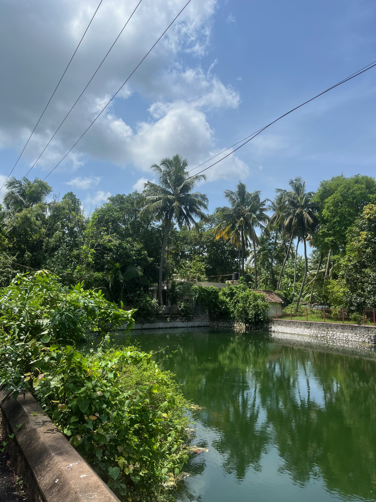
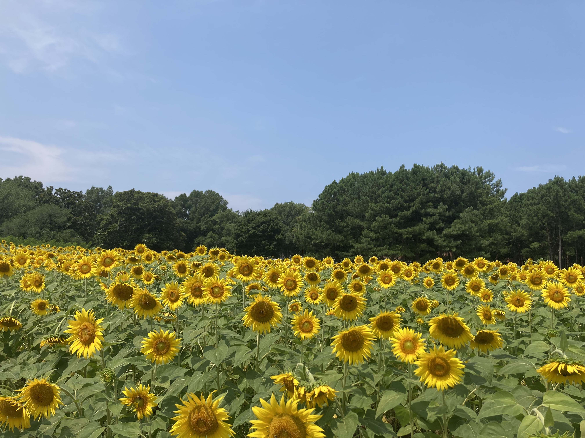
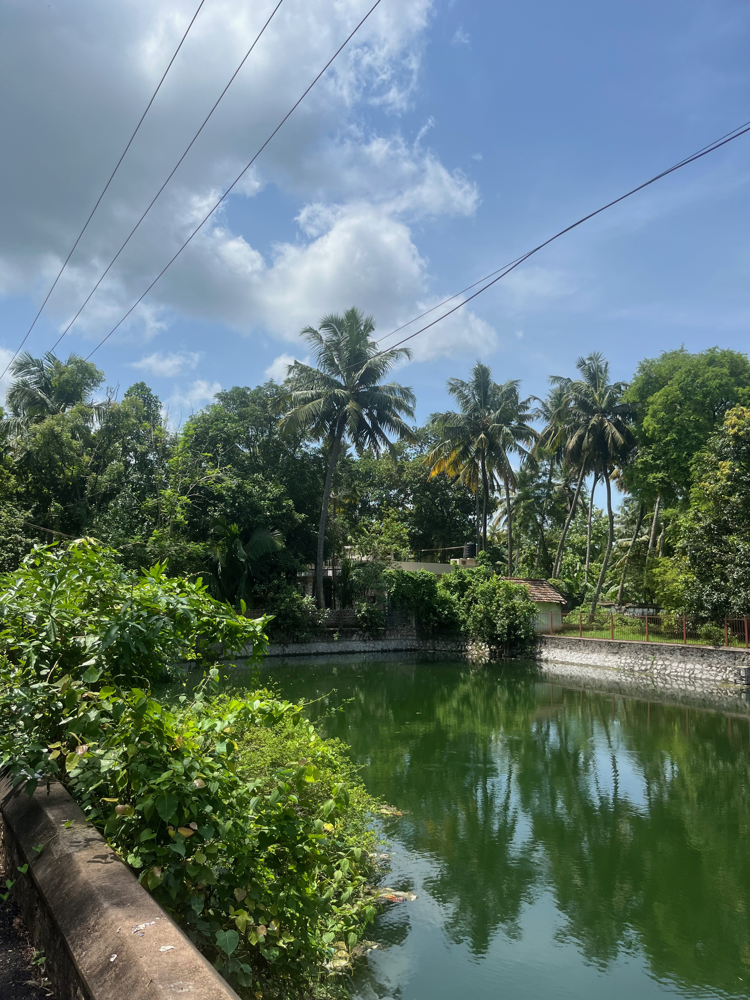
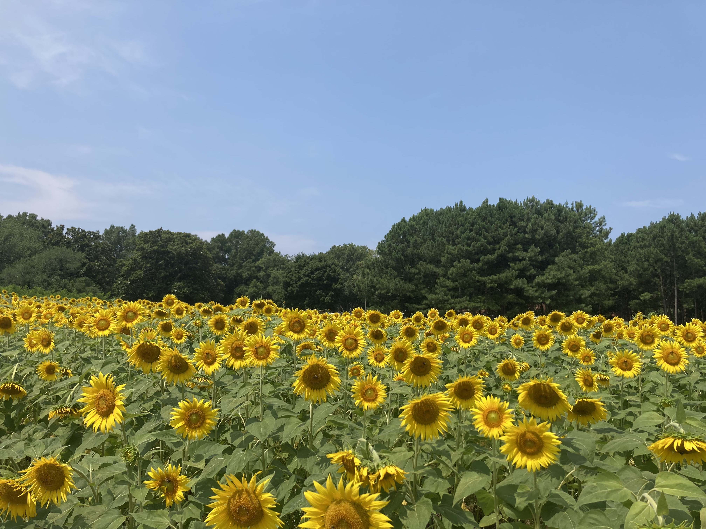

Interests
Outside of an academic setting, I enjoy baking, dancing, hiking, and traveling! I love being outdoors and exploring all that nature has to offer. Below you can find some of my favorite pictures I've taken:
 





Ten of my Favorite Desserts I've Made
- Banana Bread
- Lemon Blueberry Bundt Cake
- Pineapple Upside Down Cake
- Pumpkin Bread
- Strawberry Muffins
- Carrot Cake with Cream Cheeese Frosting
- Millionare's Shortbread
- Mango Custard
- Peach Cobbler
- Cinnamon Apple Muffins